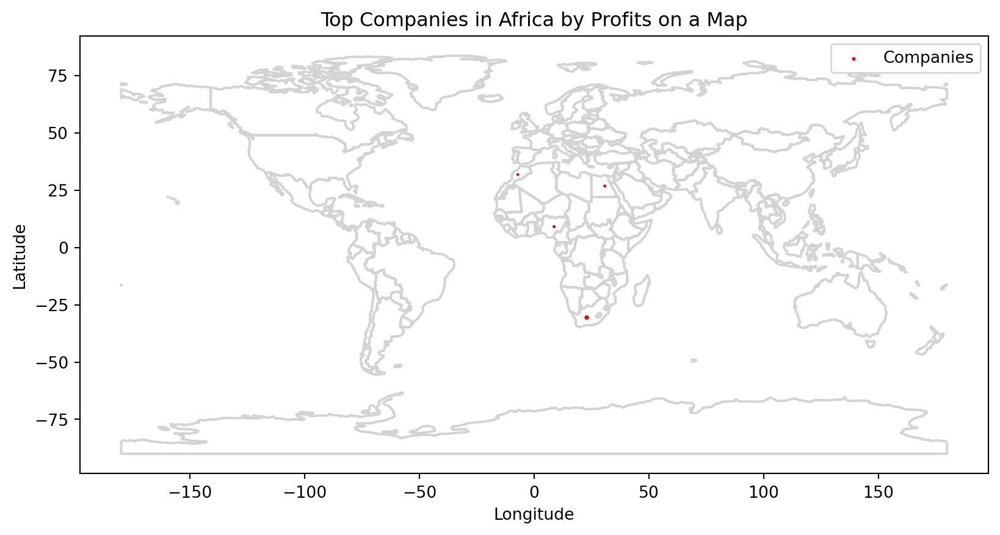

![]()
import pandas as pd
import numpy as np
import matplotlib.pyplot as plt
import seaborn as sns
import geopandas as gpd
from shapely.geometry import Point1 Background
In this analysis, we use data from Kagle(Kagle, 2023) to illustrate the use of Python and Pandas in data analysis(VanderPlas, 2016). The data captures the top 2000 companies in the world and is available for free upon registration on the Kagle website. We filter the data to only include companies from Africa.
2 Objectives
The primary goal of this exercise is to illustrate how to use Python, pandas and other libraries in Python programming to analyse data for meaningful insights about large companies in Africa.
Specifically, we seek to;
- Rank companies in Africa by their performance.
- Rank countries in Africa based on the concentration of large companies.
- Compute the correlation between company size (in terms of assets) and financial performance.
- Uncover regional patterns in company performance based on country.
- Establish the companies, countries in Africa with the highest returns on assets and profit margins.
3 Summary of Results
- Most large companies in the sample are located in South Africa.
- There is a positive relationship between company size and financial performance (sales, profits, market value). However, this relationship varies across countries.
- Companies from South Africa have the highest sales, profits, asset base, and valuation.
- Companies in Nigeria are more efficient in converting sales and assets into profits.
NB: ALL FIGURES ARE IN BILLIONS OF US DOLLARS
Tip
Please visit my rpubs site to see more data projects. Alternatively, copy and paste the link <www.rpubs.com/Karuitha> into your browser. You can also view my linkedin site for my skills and education.
My Tableau public profile contains my data visualizations.
My Shiny web apps are available on this site. You can copy-paste this web address instead https://karuitha.shinyapps.io
Tip
Skills & Technologies Applied: Python, Pandas, Geopandas, Matplotlib, Quarto, Data Science.
4 Data
The data is available on kagle as a csv file (registration is required to access the data). I start by loading the necessary packages for the analysis: pandas, numpy, matplotlib, and seaborn (Borjigin, 2023).
Next I read in the data using pandas and set the index column as the name of the company given it is a unique and meaningful identifier.
```{python}
company = pd.read_csv("Top2000CompaniesGlobally.csv")
company.columns
```Index(['Global Rank', 'Company', 'Sales ($billion)', 'Profits ($billion)',
'Assets ($billion)', 'Market Value ($billion)', 'Country', 'Continent',
'Latitude', 'Longitude'],
dtype='object')Next, I rename the columns using names that are easier to work with. I create a dictionary of old names versus new names and then rename the columns.
```{python}
## Create a dictionary of old names vs new names
names = {'Global Rank':'rank',
'Sales ($billion)':'sales',
'Profits ($billion)':'profits',
'Assets ($billion)':'assets',
'Market Value ($billion)':'market_value',
'Country':'country',
'Continent':'continent',
'Latitude':'latitude',
'Longitude':'longitude',
'Company':'company'}
# Rename the columns in place
company.rename(columns = names, inplace = True)
```Next, we filter the data to narrow down on Africa.
```{python}
company = company[company['continent'] == "Africa"]
``````{python}
## Addd the index
company.set_index("company", inplace = True)
```5 Data Exploration
We now explore the data.
5.1 Number of rows and columns
We start with the number of rows and columns in the data.
```{python}
company.shape
```(25, 9)We see that the data has 25 rows (records) and 9 columns (variables).
5.2 First and Last Rows of the Data
Next, lets examine the first 5 rows.
```{python}
company.head(5)
```| rank | sales | profits | assets | market_value | country | continent | latitude | longitude | |
|---|---|---|---|---|---|---|---|---|---|
| company | |||||||||
| Standard Bank Group | 231 | 21.0 | 1.9 | 182.0 | 19.9 | South Africa | Africa | -30.559482 | 22.937506 |
| Sasol | 320 | 20.8 | 2.9 | 24.7 | 29.4 | South Africa | Africa | -30.559482 | 22.937506 |
| MTN Group | 345 | 16.5 | 2.5 | 21.4 | 34.5 | South Africa | Africa | -30.559482 | 22.937506 |
| FirstRand | 397 | 8.4 | 1.6 | 94.1 | 18.0 | South Africa | Africa | -30.559482 | 22.937506 |
| Sanlam | 574 | 10.8 | 0.7 | 52.3 | 10.7 | South Africa | Africa | -30.559482 | 22.937506 |
We also check the last 7 rows.
```{python}
company.tail(7)
```| rank | sales | profits | assets | market_value | country | continent | latitude | longitude | |
|---|---|---|---|---|---|---|---|---|---|
| company | |||||||||
| Gold Fields | 1435 | 3.4 | 0.7 | 11.2 | 5.9 | South Africa | Africa | -30.559482 | 22.937506 |
| Imperial Holdings | 1658 | 9.9 | 0.4 | 5.5 | 4.2 | South Africa | Africa | -30.559482 | 22.937506 |
| Aspen Pharmacare Holdings | 1711 | 1.9 | 0.4 | 3.8 | 9.7 | South Africa | Africa | -30.559482 | 22.937506 |
| RMB Holdings | 1716 | 0.6 | 0.6 | 3.3 | 6.1 | South Africa | Africa | -30.559482 | 22.937506 |
| Banque Centrale Populaire | 1871 | 1.9 | 0.2 | 32.0 | 3.9 | Morocco | Africa | 31.791702 | -7.092620 |
| Assore | 1948 | 1.6 | 0.5 | 2.1 | 5.2 | South Africa | Africa | -30.559482 | 22.937506 |
| Commercial International Bank | 1966 | 1.5 | 0.3 | 14.8 | 2.8 | Egypt | Africa | 26.820553 | 30.802498 |
5.3 Visual Summary
let us use seaborn pairplot() function to create a summary picture of the data using all variables, colored by country.
```{python}
#| fig-cap: "Pairs plots for the Variables (A)"
sns.pairplot(company[['country', 'sales', 'profits', 'assets', 'market_value']], hue = "country", corner = True, palette = "Dark2", kind = "scatter")
``````{python}
#| fig-cap: "Pairs plots for the Variables (B)"
sns.pairplot(company[['country', 'sales', 'profits', 'assets', 'market_value']], corner = True, palette = "Dark2", kind = "kde")
```5.4 Variable Types
The variable types are also an important data component.
```{python}
company.info()
```<class 'pandas.core.frame.DataFrame'>
Index: 25 entries, Standard Bank Group to Commercial International Bank
Data columns (total 9 columns):
# Column Non-Null Count Dtype
--- ------ -------------- -----
0 rank 25 non-null int64
1 sales 25 non-null float64
2 profits 25 non-null float64
3 assets 25 non-null float64
4 market_value 25 non-null float64
5 country 25 non-null object
6 continent 25 non-null object
7 latitude 25 non-null float64
8 longitude 25 non-null float64
dtypes: float64(6), int64(1), object(2)
memory usage: 2.5+ KB```{python}
company.dtypes
```rank int64
sales float64
profits float64
assets float64
market_value float64
country object
continent object
latitude float64
longitude float64
dtype: object5.5 Missing Values
Let us check the data for any missing values for sales, profits, assets, market_value, longitude, and latitude.
```{python}
company[company['sales'].isna()]
```| rank | sales | profits | assets | market_value | country | continent | latitude | longitude | |
|---|---|---|---|---|---|---|---|---|---|
| company |
```{python}
company[company['profits'].isna()]
```| rank | sales | profits | assets | market_value | country | continent | latitude | longitude | |
|---|---|---|---|---|---|---|---|---|---|
| company |
```{python}
company[company['assets'].isna()]
```| rank | sales | profits | assets | market_value | country | continent | latitude | longitude | |
|---|---|---|---|---|---|---|---|---|---|
| company |
```{python}
company[company['market_value'].isna()]
```| rank | sales | profits | assets | market_value | country | continent | latitude | longitude | |
|---|---|---|---|---|---|---|---|---|---|
| company |
```{python}
company[company['longitude'].isna()]
```| rank | sales | profits | assets | market_value | country | continent | latitude | longitude | |
|---|---|---|---|---|---|---|---|---|---|
| company |
```{python}
company[company['latitude'].isna()]
```| rank | sales | profits | assets | market_value | country | continent | latitude | longitude | |
|---|---|---|---|---|---|---|---|---|---|
| company |
This is a conveniently clean data without missing values which is a rare occurrence in data science.
5.6 Summary Statistics
We use the describe method to make summary statistics for numeric and character variables separately.
```{python}
company.describe(include = "float64")
```| sales | profits | assets | market_value | latitude | longitude | |
|---|---|---|---|---|---|---|
| count | 25.000000 | 25.000000 | 25.000000 | 25.000000 | 25.000000 | 25.000000 |
| mean | 7.068000 | 0.824000 | 25.240000 | 11.064000 | -17.915824 | 19.299126 |
| std | 6.109195 | 0.706093 | 38.608073 | 8.497445 | 23.543621 | 10.892318 |
| min | 0.600000 | 0.000000 | 2.100000 | 2.800000 | -30.559482 | -9.429499 |
| 25% | 1.900000 | 0.400000 | 5.500000 | 5.900000 | -30.559482 | 22.937506 |
| 50% | 5.400000 | 0.600000 | 11.200000 | 8.100000 | -30.559482 | 22.937506 |
| 75% | 9.900000 | 0.800000 | 24.700000 | 10.700000 | -30.559482 | 22.937506 |
| max | 21.000000 | 2.900000 | 182.000000 | 34.500000 | 31.791702 | 30.802498 |
We also do the same for string data types.
```{python}
company.describe(include = "object")
```| country | continent | |
|---|---|---|
| count | 25 | 25 |
| unique | 5 | 1 |
| top | South Africa | Africa |
| freq | 19 | 25 |
Here we see that there are 25 observations with 5 unique countries. The country with the most companies is the South Africa (19 out of the 25 companies in the sample).
6 Analysis
In this section, we explore some key issues from the data, listed in order.
6.1 Which Companies are the Best Performing in Africa?
6.1.1 Companies with the Highest Sales in Africa
We start by examining sales. The Standard Bank Group and Sasol lead the pack in this case. Npte that the top 10 companies are from South Africa with the exception of Royal Carribean Cruises from Liberia.
```{python}
company.nlargest(25, "sales")[['country', 'sales']]
```| country | sales | |
|---|---|---|
| company | ||
| Standard Bank Group | South Africa | 21.0 |
| Sasol | South Africa | 20.8 |
| MTN Group | South Africa | 16.5 |
| Bidvest Group | South Africa | 16.4 |
| Sanlam | South Africa | 10.8 |
| Shoprite Holdings | South Africa | 10.1 |
| Steinhoff International | South Africa | 9.9 |
| Imperial Holdings | South Africa | 9.9 |
| FirstRand | South Africa | 8.4 |
| Royal Carribean Cruises | Liberia | 7.7 |
| MMI Holdings | South Africa | 6.2 |
| AngloGold Ashanti | South Africa | 6.1 |
| Orascom Construction | Egypt | 5.4 |
| Naspers | South Africa | 5.1 |
| Impala Platinum Holdings | South Africa | 3.4 |
| Gold Fields | South Africa | 3.4 |
| Attijariwafa Bank | Morocco | 3.4 |
| Aspen Pharmacare Holdings | South Africa | 1.9 |
| Banque Centrale Populaire | Morocco | 1.9 |
| Remgro | South Africa | 1.7 |
| Assore | South Africa | 1.6 |
| Dangote Cement | Nigeria | 1.5 |
| Exxaro Resources | South Africa | 1.5 |
| Commercial International Bank | Egypt | 1.5 |
| RMB Holdings | South Africa | 0.6 |
6.1.2 Companies with the Highest Profits in Africa
In terms of profits, Sasol and MTN Group from South Africa come up tops. Dangote Cement of Nigeria is the only company on the top 10 that is outside South Africa.
```{python}
company.nlargest(25, "profits")[['country', 'profits']]
```| country | profits | |
|---|---|---|
| company | ||
| Sasol | South Africa | 2.9 |
| MTN Group | South Africa | 2.5 |
| Standard Bank Group | South Africa | 1.9 |
| FirstRand | South Africa | 1.6 |
| Exxaro Resources | South Africa | 1.2 |
| Remgro | South Africa | 1.1 |
| Dangote Cement | Nigeria | 0.8 |
| AngloGold Ashanti | South Africa | 0.8 |
| Gold Fields | South Africa | 0.7 |
| Orascom Construction | Egypt | 0.7 |
| Steinhoff International | South Africa | 0.7 |
| Sanlam | South Africa | 0.7 |
| RMB Holdings | South Africa | 0.6 |
| Attijariwafa Bank | Morocco | 0.5 |
| Bidvest Group | South Africa | 0.5 |
| Impala Platinum Holdings | South Africa | 0.5 |
| Assore | South Africa | 0.5 |
| Shoprite Holdings | South Africa | 0.4 |
| Naspers | South Africa | 0.4 |
| Imperial Holdings | South Africa | 0.4 |
| Aspen Pharmacare Holdings | South Africa | 0.4 |
| MMI Holdings | South Africa | 0.3 |
| Commercial International Bank | Egypt | 0.3 |
| Banque Centrale Populaire | Morocco | 0.2 |
| Royal Carribean Cruises | Liberia | 0.0 |
6.1.3 Companies with the Highest Market Value in Africa
The picture replicates itself in market valuation.
```{python}
company.nlargest(25, "market_value")[["country", "market_value"]]
```| country | market_value | |
|---|---|---|
| company | ||
| MTN Group | South Africa | 34.5 |
| Sasol | South Africa | 29.4 |
| Naspers | South Africa | 27.7 |
| Standard Bank Group | South Africa | 19.9 |
| FirstRand | South Africa | 18.0 |
| Dangote Cement | Nigeria | 15.1 |
| Sanlam | South Africa | 10.7 |
| Shoprite Holdings | South Africa | 10.2 |
| Remgro | South Africa | 9.9 |
| Aspen Pharmacare Holdings | South Africa | 9.7 |
| AngloGold Ashanti | South Africa | 9.5 |
| Impala Platinum Holdings | South Africa | 9.3 |
| Bidvest Group | South Africa | 8.1 |
| Royal Carribean Cruises | Liberia | 7.4 |
| Orascom Construction | Egypt | 7.0 |
| Attijariwafa Bank | Morocco | 6.7 |
| Exxaro Resources | South Africa | 6.4 |
| RMB Holdings | South Africa | 6.1 |
| Gold Fields | South Africa | 5.9 |
| Assore | South Africa | 5.2 |
| Steinhoff International | South Africa | 5.0 |
| Imperial Holdings | South Africa | 4.2 |
| MMI Holdings | South Africa | 4.0 |
| Banque Centrale Populaire | Morocco | 3.9 |
| Commercial International Bank | Egypt | 2.8 |
6.2 Which Countries and Continents Have the Highest Concentration of Large Companies?
In this section, we utilize the global rank in size variable to identify the countries and continents with the highest number of top-ranking companies. We see that companies from USA, Japan, China, UK, Canada, and South Korea dominate the rankings. Note that these are countries mainly from North America and Asia (with the exception of the UK) which illustrates the dominance of these two continents in global trade.
```{python}
company['country'].value_counts()
```South Africa 19
Morocco 2
Egypt 2
Nigeria 1
Liberia 1
Name: country, dtype: int64```{python}
company['continent'].value_counts()
```Africa 25
Name: continent, dtype: int64We then visualize this information on a world map using latitude and longitude data to show the geographic distribution of these companies. The size of the dots represents profits. We find that while there are the profitable companies are mainly in Asia, Europe, and North America. The rest of the world generates very few profits.
```{python}
# Create a GeoDataFrame
geometry = [Point(lon, lat) for lon, lat in zip(company['longitude'], company['latitude'])]
gdf = gpd.GeoDataFrame(company, geometry=geometry, columns=['company', 'sales', 'profits', 'assets'])
``````{python}
world = gpd.read_file(gpd.datasets.get_path('naturalearth_lowres'))
``````{python}
#| fig-cap: "Top Companies by Sales on a World Map"
# Create a subplot
fig, ax = plt.subplots(figsize=(10, 10))
# Plot the world map
world.boundary.plot(ax=ax, color = "lightgrey")
# Plot your data on the map
gdf.plot(ax=ax, marker='o', color='red', markersize='profits', label='Companies')
# Add labels and legend
ax.set_title('Top Companies in Africa by Profits on a Map')
ax.set_xlabel('Longitude')
ax.set_ylabel('Latitude')
ax.legend()
plt.show()
```
6.3 Is There a Correlation Between Company Size (in terms of assets) and Financial Performance?
Here, we analyze the relationship between the asset base of companies, which is a proxy for size and financial metrics such as sales, profits, and market value. The goal is to determine if larger companies tend to have higher sales, profits, and market value, or if there are exceptions. Overall, there appears to be a positive link between the size of a company and its financial performance in terms of sales, profits, and market value. However, this relationship varies by country.
```{python}
#| fig-cap: "Pairs plots for the Variables (C)"
sns.pairplot(company[["country", "assets", "sales", "profits", "market_value"]], hue = "country")
``````{python}
company[["assets", "sales", "profits", "market_value"]].corr()
```| assets | sales | profits | market_value | |
|---|---|---|---|---|
| assets | 1.000000 | 0.503100 | 0.388891 | 0.273381 |
| sales | 0.503100 | 1.000000 | 0.637116 | 0.579276 |
| profits | 0.388891 | 0.637116 | 1.000000 | 0.766124 |
| market_value | 0.273381 | 0.579276 | 0.766124 | 1.000000 |
6.4 Are There Regional Patterns in Company Performance Based on Continent?
In this section, I group the data by country and analyze the average sales, profits, and assets for companies in each country. South African companies in the sample have by far the highest sales, profits, asset base, and market valuation .
```{python}
#| fig-cap: "Sales by Companies"
plt.style.use("fivethirtyeight")
company.groupby("country")["sales"].sum().sort_values().plot(kind = "barh", title = "Total Sales of Top Companies in Africa by Country")
```<AxesSubplot:title={'center':'Total Sales of Top Companies in Africa by Country'}, ylabel='country'>Sales by Companies
```{python}
#| fig-cap: "Total Profits of Top 2000 Companies globally by Continent"
company.groupby("country")["profits"].sum().sort_values().plot(kind = "barh", title = "Total Profits of Top Companies in Africa by Country")
```<AxesSubplot:title={'center':'Total Profits of Top Companies in Africa by Country'}, ylabel='country'>Total Profits of Top 2000 Companies globally by Continent
```{python}
#| fig-cap: "Total Assets of Top 2000 Companies globally by Continent"
company.groupby("country")["assets"].sum().sort_values().plot(kind = "barh", title = "Total Assets of Top Companies in Africa by Country")
```<AxesSubplot:title={'center':'Total Assets of Top Companies in Africa by Country'}, ylabel='country'>Total Assets of Top 2000 Companies globally by Continent
6.5 Which Companies, Contiments have the Highest Returns on Assets and Profit margins?
The return on assets is the ratio of profits to assets and captures the efficiency with which a company utilises its assets to generate profits. The net profit margin also captures how well a company is able to convert its sales into profits. The margin can also proxy the management efforts towards expenses management.
Dangote cement of Nigeria leads with a return on assets of 0.25. This is phenomenal!! The companies in the top 5 all have a return greater than 15%, which is an exceptional performance.
```{python}
company["roa"] = company["profits"] / company["assets"]
company["margin"] = company["profits"] / company["sales"]
``````{python}
company['roa'].sort_values(ascending = False).head()
```company
Dangote Cement 0.250000
Exxaro Resources 0.244898
Assore 0.238095
RMB Holdings 0.181818
Remgro 0.154930
Name: roa, dtype: float64Next, I compute the median ROA for each continent. Nigeria leads, though the country has only one company in the sample. South Africa is in second place with a median ROA of 7%.
```{python}
company.groupby("country")['roa'].median().sort_values(ascending = False)
```country
Nigeria 0.250000
South Africa 0.072727
Egypt 0.045849
Morocco 0.008872
Liberia 0.000000
Name: roa, dtype: float64Let us do the same for profit margin. RMB Holdings has a profit margin of 1 which implies that the company generated profits equal to sales. Overall, the conversion of sales to profits is impressive among the industry leaders.
```{python}
company['margin'].sort_values(ascending = False).head()
```company
RMB Holdings 1.000000
Exxaro Resources 0.800000
Remgro 0.647059
Dangote Cement 0.533333
Assore 0.312500
Name: margin, dtype: float64Nigeria and Egypt leads in median profit margin. Again this could be die to the low number of companies from the coutries in this sample.
```{python}
company.groupby("country")['margin'].median().sort_values(ascending = False)
```country
Nigeria 0.533333
Egypt 0.164815
South Africa 0.139423
Morocco 0.126161
Liberia 0.000000
Name: margin, dtype: float647 Conclusion
In this analysis, we use data from Kagle to illustrate the use of Python and Pandas in data analysis. From the analysis, we find that;
- Most large companies in the sample are located in South Africa.
- There is a positive relationship between company size and financial performance (sales, profits, market value). However, this relationship varies across countries.
- Companies from South Africa have the highest sales, profits, asset base, and valuation.
- Companies in Nigeria are more efficient in converting sales and assets into profits.
References
Borjigin, C. (2023). Python data science. Springer Nature Singapore. https://doi.org/10.1007/978-981-19-7702-2
Kagle. (2023). Top 2000 companies globally. https://www.kaggle.com/datasets/joebeachcapital/top-2000-companies-globally.
VanderPlas, J. (2016). Python data science handbook: Essential tools for working with data. " O’Reilly Media, Inc.".